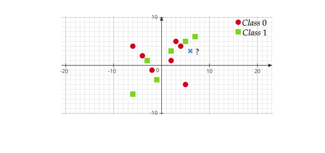
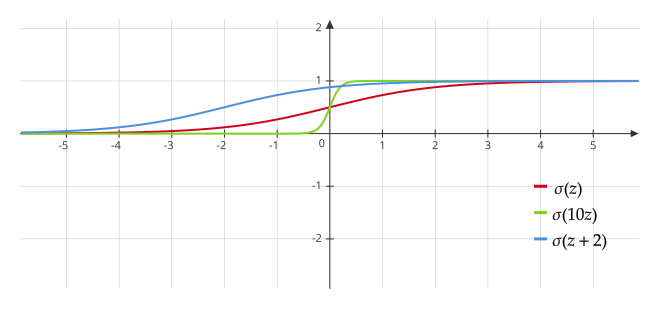
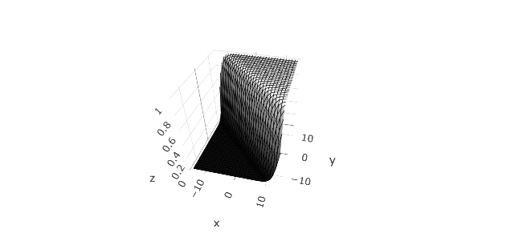

Week 5¶
Classification¶
Let \(\mathcal{Y}\) is a finite set of classes, and for now assume \(y^{(i)}\in \{0,1\}\). We want to use \(x\) to predict \(y\). We assume
where \(g\) is an arbitrary function determining the probability of \(y=1\) for given \(x\). Then this Bernoulli distribution is completely general. See an example of this setting in the plane (\(p=2\)).

We could try to just do linear regression: under squared error loss, \(E(y\mid x)\) is optimal and \(E(y\mid x) = g(x)\). However, \(g(x)\in [0,1]\) as it outputs a probability, but \(x^T\boldsymbol{\beta}\) takes values in \(\mathbb{R}\).
Logistic Regression¶
Instead of modeling \(y(x)=x^T\boldsymbol{\beta}\), we will assume that the probability \(g(x)\)(1) is given by
- Here \(\sigma(x^T\boldsymbol{\beta})\), the probability of \(y\mid x\), should be in [0,1], which is easy to verify.
where \(\sigma\) is the logistic function given by
This is called logistic regression model.

For \(p=2\), the logistic function is given by \(\sigma(\beta_0 + \beta_1 x_1 + \beta_2 x_2)\). The following figure shows an example of \(\sigma(x+y)\).

Motivation and Interpretation¶
On one hand, \(\sigma\) is differentiable and easy to compute with. On the other hand, logistic regression assumes the log odds is a linear function. To further explain this, we need to introduce the following definitions.
If \(p\) is a probability, the quantity \(p /(1-p)\) is called the (corresponding) odds, and can take on any value between 0 and \(\infty\). Values of the odds close to 0 and \(\infty\) indicate very low and very high probabilities of default, respectively.
The log odds (or logit) of the probability is the logarithm of the odds, i.e.
Hence, in logistic regression, we make an assumption that the log odds is linearly dependent on \(x\).
Another more insightful motivation connects the logistic function to the exponential family from the prospective of generative models:
Procedure of Logistic Regression¶
How to use logistic regression for prediction:
-
Get training data \((x^{(1)}, y^{(1)}),(x^{(2)}, y^{(2)})\dots\)
-
Use training data to select a \(\hat{\beta}\), i.e. fit our model to the training data.
-
Get a new \(x\) want to predict the class of \(y\): Compute the estimated probability \(\displaystyle \sigma (\hat{\beta}^T x) = \frac{e^{\hat{\beta}^T x}}{1 + e^{\hat{\beta}^T x}}\).
-
If \(\sigma (\hat{\beta}^T x)>0.5\), predict that \(y\) is in class \(1\).
-
If \(\sigma (\hat{\beta}^T x)<0.5\), predict that \(y\) is in class \(0\).
-
This procedure is designed to minimize the misclassification error. However, some errors are "worse" than others. For example, for a spam email filter, misclassifying spams as normal emails is unlikely to cause big issue, but it may be terrible in the opposite. To account for this we can modify the 0.5 threshold into a larger number (such as 0.95) when predicting a email to be a spam.(1)
- This means the filter is surely confident when classify some email as spam.
Multinomial Regression¶
Let \(y^{(i)}\) takes on value from multiple classes, we say \(K\)-class, and we assume
For \(p\) features, we assume \(x=(1, x_1,\dots, x_p)\). Then the multinomial regression is given by
where we regard the \(K\)-th class as the baseline class. It is easy to see \(p_1,\dots, p_K\) are valid probabilities(1). A function with a form of \(p_1,\dots, p_{K-1}\) is called softmax function.
- Non-negative and the sum is 1.
Calculate the Estimator¶
We use maximum likelihood to estimate \(\beta\) to get \(\hat{\beta}\). We take \(K=2\) as an example.
Assume \(y\mid x \sim {\rm Bernoulli}\left(\pi\right)\), i.e. \(Pr(y) = \pi^y(1-\pi)^{1-y}\). To apply logistic regression, we assume \(y^{(i)}\sim {\rm Bernoulli}\left(\sigma \left((x^{(i)})^T \beta\right)\right)\). Then the log-likelihood function is
Then the MLE is defined as
Unfortunately, unlike linear regression, \(\nabla L(\beta)\) here has no closed-form. Therefore, we may apply some other optimization method, such as gradient descent and Newton Raphson Algorithm(1).
- Reference: 刘浩洋[等]编著, 最优化:建模,算法与理论 (Optimization: modeling, algorithm and theory), Di 1 ban. Beijing: 高等教育出版社, 2020. For GD see section 6.2, and for NR see section 6.4.
Brief comparison of GD and NR:
-
NR Usually takes more intelligent steps than GD.
-
NR There is no tuning required while in GD we have to tune the step size.
-
Problem with NR We have to invert the the Hessian matrix at each step. Inverting such a matrix has complexity \(O(p^3)\). For GD we only have to compute the gradient, which has complexity \(O(p)\).